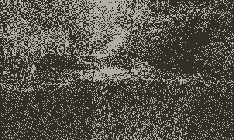
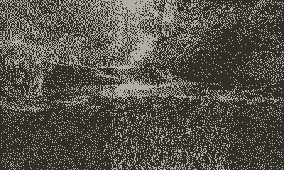

Coracle for Playdate
 
A port of Coracle to Lua to work with the Playdate SDK. Coracle offers a quick and easy way to develop drawings/sketches for the Playdate, all that's needed is to learn some basic Lua.
Github
Coracle Demos
Coracle for Playdate allows easy porting of Coracle Kotlin Drawings by including most of the same methods and the Vector class (careful; the Playdate SDK also includes a Vector class with some similar operations).